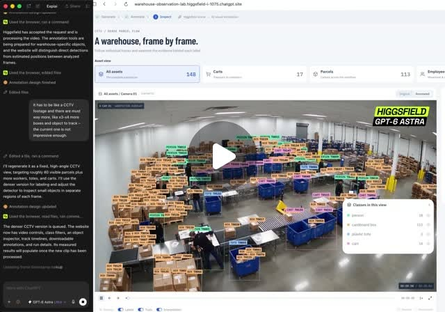

Threads｜GPT-6 Astra 倉庫影像標註工作流：從合成 CCTV 到 warehouse-observation-lab

一句話摘要
這則 Threads 展示一個「AI 自己產生測試資料、自己寫標註工具」的倉庫視覺工作流：先生成合成 CCTV，再建立可切換原始畫面／標註畫面的網站，為物件與人員加框、編號與追蹤資訊。
原始貼文脈絡
LIQ AI（`@liq_media`）的主文標題宣稱：
> GPT-6 Astra 自己生一段倉庫監視器畫面，再自己寫一個網站幫每一箱包裹跟每個人標框！81 格畫面標出 13,038 個標註。
作者後續說明的流程是：
- 以 Higgsfield 生成一段合成倉庫 CCTV 畫面。
- 畫面包含貨架、輸送帶、紙箱、藍色置物籃與員工。
- AI 自行建立 `warehouse-observation-lab` 網站。
- 將包裹、推車、置物籃等物件框選並編號。
- 介面提供原始畫面／標註畫面切換、分類檢視、追蹤軌跡與內插補幀等功能。
貼文約顯示 6,461 次瀏覽、72 個讚、4 則留言、56 次轉發；互動數字會變動，僅代表擷取當下頁面。
值得注意的工作流設計
### 1. 合成資料先行
若真實倉庫影像涉及個資、商業機密或拍攝成本，合成 CCTV 可作為介面與初步演算法測試素材。不過合成影像不一定能代表實際攝影機的角度、遮擋、光線、鏡頭畸變與物件分布。
### 2. 讓工具本身也由 AI 生成
這個案例的重點不只是「AI 做標記」，而是連資料標註的操作介面也由 AI 產生。若介面能快速呈現原始／標註對照、物件類別、追蹤軌跡與影格跳轉，便可把一次性的視覺分析轉成可檢查的工作台。
### 3. 從逐格框選走向時間序列
81 個影格中的標註若能跨影格維持物件 ID，才接近影片資料標註，而不只是單張圖片偵測。實際驗證時應檢查：物件被遮擋後是否重新辨識、ID 是否漂移、跨鏡頭是否錯配，以及內插補幀是否製造虛假的移動軌跡。
可落地的物流觀察方向
作者提出的應用方向包括：
- 追蹤包裹交接與流轉位置。
- 觀察人員與推車的動線。
- 找出輸送帶、揀貨區或交接點的瓶頸。
- 以事件時間線回看延遲、停滯與異常堆積。
這些方向若要進入正式營運，還需要定義物件類別、事件規則、標註品質、資料保存期限、權限控管與人工覆核流程。
查核狀態：社群展示，不是官方能力證明
- **已確認**：Threads 貼文存在，作者為 `@liq_media`，貼文確實描述合成倉庫 CCTV、`warehouse-observation-lab`、物件標框與 81／13,038 數字。
- **相關社群轉述**：`@kufutw` 將它描述為「81 個影格、13,038 筆標註」的影片資料標註自動化；`@ubermingcourse` 延伸提出包裹、工人與推車流量追蹤的問題。
- **尚未獨立驗證**：GPT-6 Astra 是否為正式公開模型、網站是否真的由該模型端到端建立、標註數字的計算方式、追蹤品質，以及 Higgsfield 在流程中的實際輸出設定。
- **沒有公開程式碼**：目前貼文未提供可重現的 `warehouse-observation-lab` repository、資料集、模型版本或完整執行紀錄。
這與既有 GPT-6 Astra 遊戲生成及影片生成案例相同：可以保存為值得追蹤的社群展示，但不能把模型名稱、工具鏈與能力宣稱寫成 OpenAI 官方已確認的產品資訊。
如果要自行驗證
- 使用不含真人臉孔、姓名、制服標誌或敏感商業資訊的合成影片。
- 固定影格數、物件類別與標註格式，先抽樣檢查每一格的框與 ID。
- 匯出 COCO、YOLO 或 MOT 類格式，確認標註是否真的可供後續模型訓練或評估。
- 分開評估偵測、追蹤、分類、內插補幀與介面呈現，不要用漂亮的 UI 代替模型指標。
- 使用 precision、recall、IoU、IDF1、MOTA 等指標，並保留人工抽查紀錄。
- 若畫面含員工或訪客，先處理告知、合法性、去識別化、保存期限與存取權限。
- 將 AI 產生的程式碼放在隔離環境執行，檢查檔案讀取、網路請求、上傳與資料外傳行為。
與既有 GPT-6 Astra 條目的關係
本條目是同一社群模型敘事下的「影片資料標註／物流視覺」分支，與以下條目互相參照但不合併，因為工作目標不同：
- GPT-6 Astra 自動製作可玩遊戲：觀察玩法、建模、瀏覽器測試與迭代。
- GPT-6 Astra × Seedance 2.5：影像到影片的社群能力宣稱查核。
共同查核結論仍是：目前沒有足夠官方公開資料證明 GPT-6 Astra 的正式身分與上述社群展示的端到端能力。
原始與相關連結
- https://www.threads.com/share/_08yaxTaK/
- https://www.threads.com/@liq_media/post/DdIgKTSDNjL
- https://www.threads.com/@liq_media/post/DdIgOd_nX9F
- https://www.threads.com/@liq_media/post/DdIgQhDnQjJ
- https://www.threads.com/@kufutw/post/DdA-kbrD5Vb
- https://www.threads.com/@ubermingcourse/post/DdBxLn8CgD1
- https://www.threads.com/@bbbachh.ww/post/Dc86SQDESKK
- https://www.threads.com/@sliven0722/post/DdAaYkZAeuS
- https://www.threads.com/@ouknowtw/post/Dc_EvulE1-4